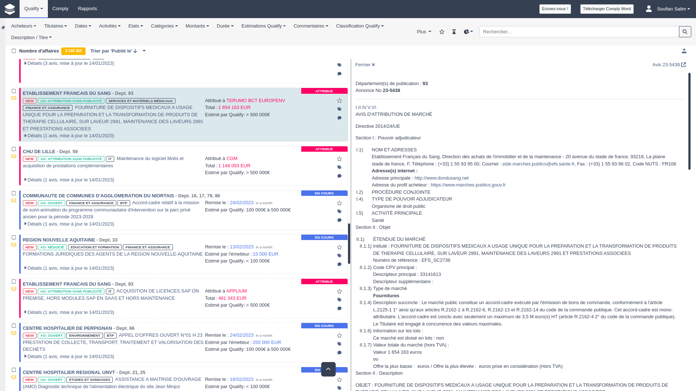
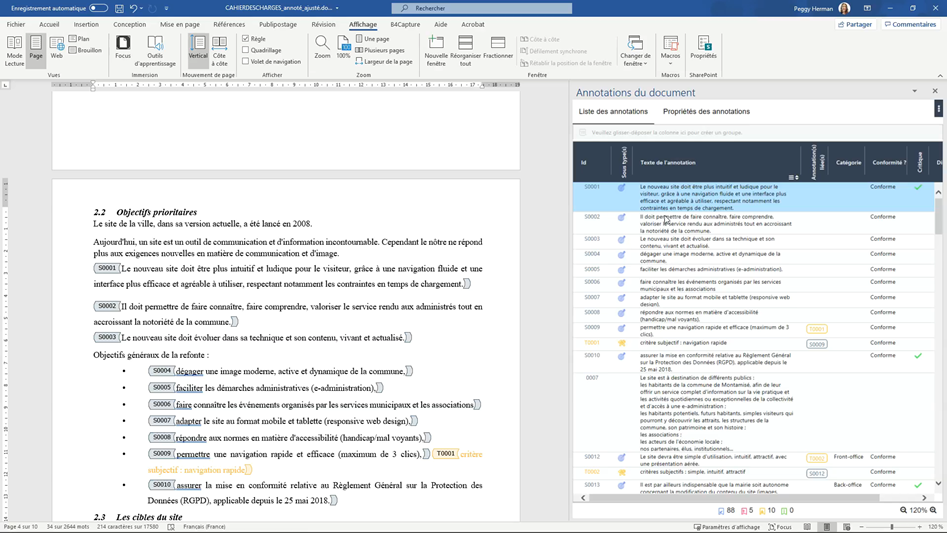
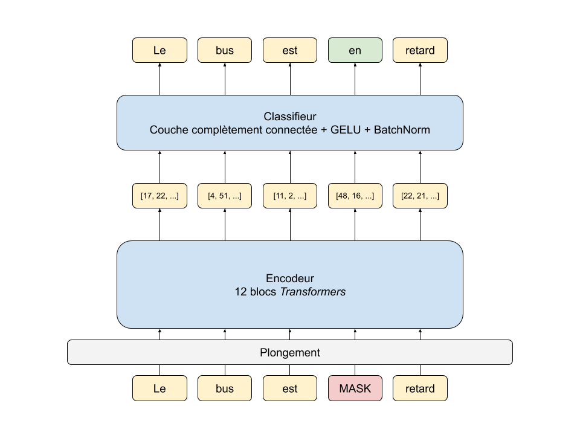
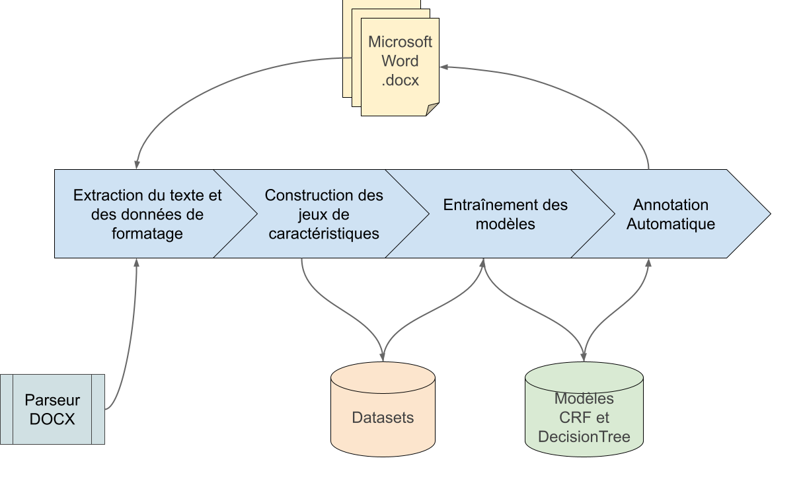
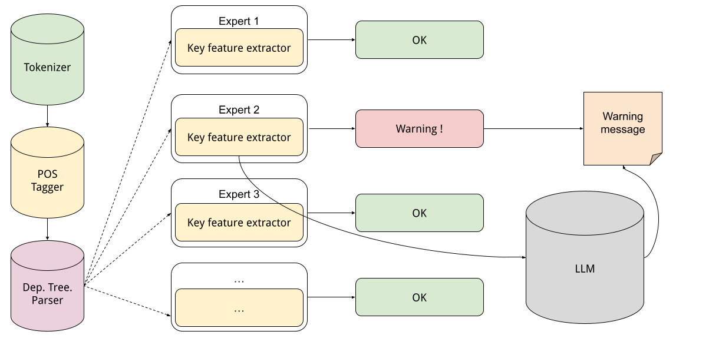
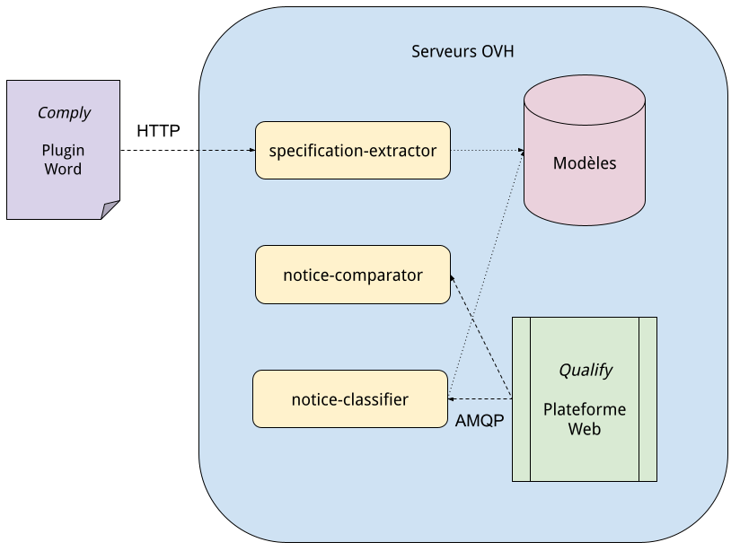
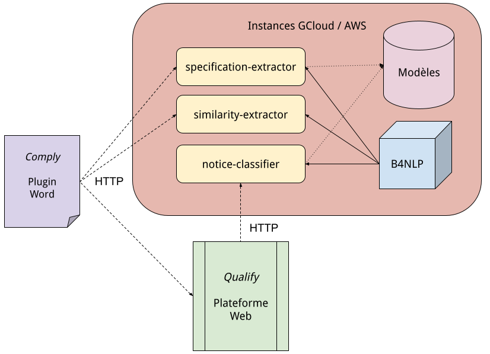
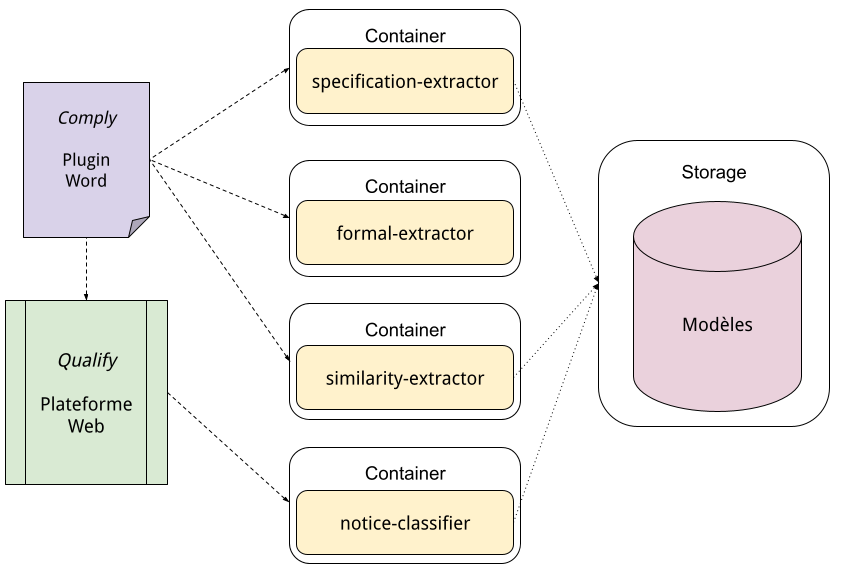
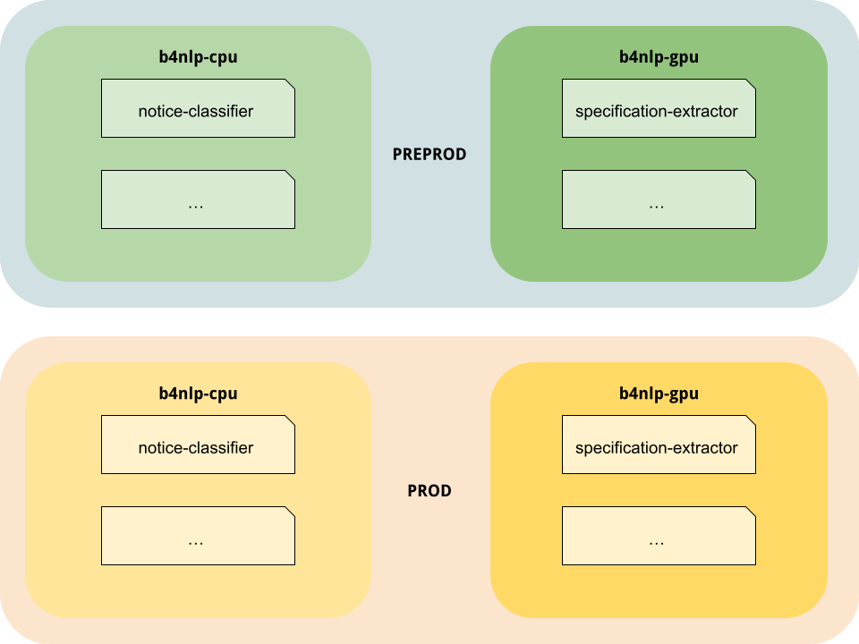

8 janvier 2024
Soufian SALIM
Bee4win
Sommaire
Présentation rapide
- Domaine d'activité : avant-vente
- Outils Bee4win qui emploient le TAL
Démo des services TAL développés
- Classification sémantique d'exigences
- Extraction d'exigences dans un document structuré
- Contrôle de la qualité des exigences
- ...
- Pour chaque : Démo + QA + pipeline
Retours d'expériences du TAL/ML/DS en entreprise
- Université vs services en production
- Architectures pour services TAL
- Considérations générales
Domaine d'activité de Bee4win
Services, conseils et solutions logicielles dans le domaine de l'avant-vente et de la réponse aux appels d'offre.
- Appel d'offres: moyen pour les acheteurs publics ou les entreprises privées d'obtenir des offres de différents fournisseurs.
- Avant-vente: tout le processus qui mène une entreprise à conclure une réponse à un appel d'offres.
Les étapes sont :
- Prospection ← plate-forme web Qualify
- Qualification des leads ← plate-forme web Qualify
- Analyse des besoins ← plugin Word Comply
- Préparation de l'offre ← plugin Word Comply
- Présentation de l'offre / Négociation / Conclusion / Suivi
Plate-forme web Qualify

Plugin Word Comply

Utilisation du TAL
-
Qualify:
- Classification des avis
- Résumé automatique
- Extraction de mots-clefs
- Mesures de similarité
-
Comply:
- Extraction et classification des exigences
- Identification des risques
- Identification des doublons, contradictions...
- Controle de la qualité
- Identification des normes et standards
- Identification des documents annexes
Démo : classification des exigences
BERT

Démo : classification formelle
Pipeline de classification formelle

Démo : analyse de la qualité
Analyse de la qualité

Démo : alignement de phrases
Retour d'expérience : université vs entreprise
-
Mesures de succès : métriques objectives vs sentiment et utilité.
-
Corpus et données : corpus de recherche et d'apprentissage relativement "propres".
-
Tâches atypiques : pas que classification thématique, analyse du sentiment.
-
Ressources linguistiques : service constant selon la langue, le sous-domaine, le format.
Retour d'expérience : considérations par rapport aux clients
-
Confidentialité : anonymisation vs confidentialité complète.
-
Contraintes : temps, simplicité d'utilisation.
-
APIs & vol de données : France > Europe > USA.
-
Effet "wow" : inestimable.
Python en entreprise ?
- Communauté : communauté pro et de recherche.
- Écosystème : SpaCy, Gensim, Transformers, SKLearn...
- Intégration : BDD, HTTP, AMQP.
- Déploiement : préfabs sur AWS, Gcloud, Azure.
- ML : Torch, Tensorflow.
- Soutien GAFAM : librairies & wrappers API.
- Rapidité : prototypage, démonstrations, mise en service.
Conception d'un système
- Projet universitaire : pipeline cohérente pour faire ressortir et évaluer l'élément innovant.
- Projet d'industrie : patchwork affreux.
Architecture de services TAL: 1ere itération

Architecture de services TAL: 2e itération

Architecture de services TAL: système actuel

Organisation des containers TAL

Questions / Réponses